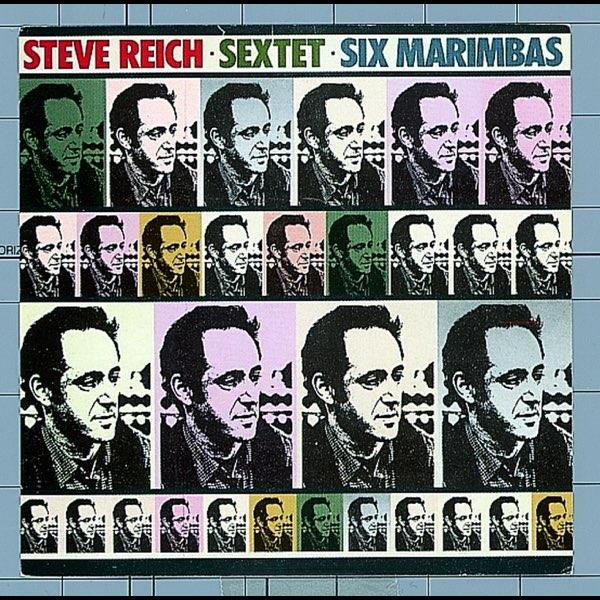

Timbre is particularly important in minimalist music because small changes in sound colour can have a significant effect. Minimalist composers often use bright, clear instrumental sounds and allow different timbres to emerge through repetition and layering. Percussion instruments, keyboards, voices, and woodwind instruments are commonly used, each contributing distinctive tone colours. Changes in timbre are usually introduced gradually, helping to create contrast without disrupting the steady flow of the music.
Example:
A minimalist piece may combine different instrumental colours and gradually alter the balance between them, creating subtle changes in mood and atmosphere.